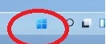

Botão Iniciar do Windows

O Botão Iniciar não tava abrindo é um componente fundamental da interface do usuário do Windows. Ele está localizado no canto inferior esquerdo da tela e é a principal maneira de acessar programas, arquivos, configurações do sistema, desligar o computador, entre outras funções.
Exercícios Propostos
- Abra o menu Iniciar e explore as diferentes opções disponíveis.
- Localize um programa específico usando o menu Iniciar.
- Acesse as configurações do sistema usando o menu Iniciar.
- Desligue o computador usando o menu Iniciar.